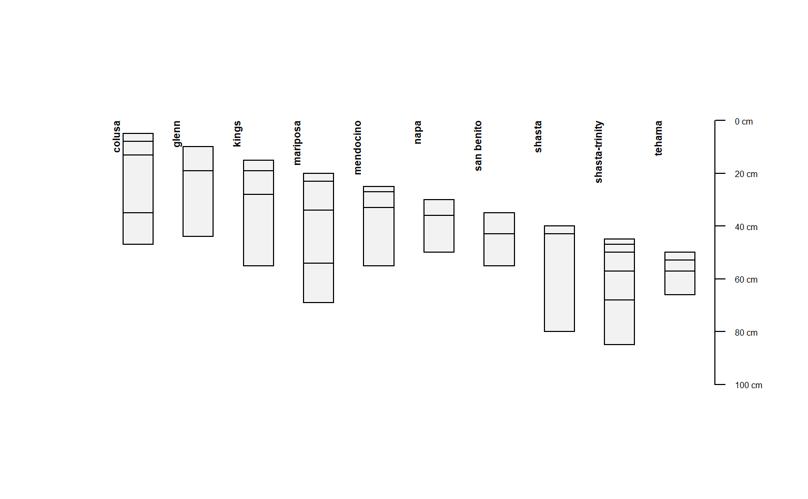
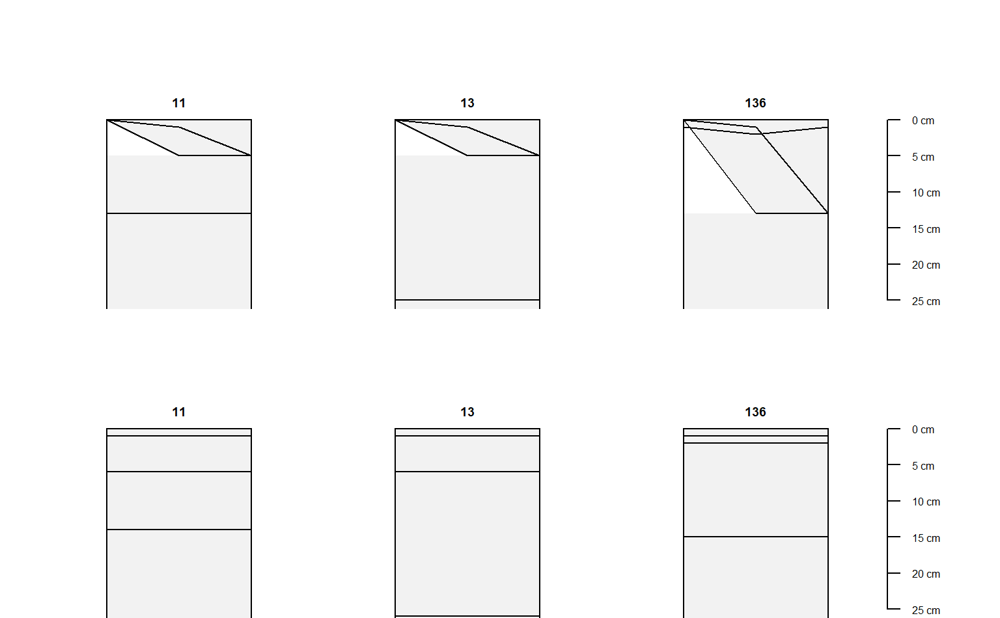

R/accumulateDepths.R
accumulateDepths.RdFix old-style organic horizon depths, or depths with a non-standard datum, by the "depth accumulation" method.
accumulateDepths( x, id = NULL, hzdepths = NULL, hzname = NULL, hzdatum = 0, seqnum = NULL, pattern = "O", fix = TRUE )
| x | A |
|---|---|
| id | unique profile ID. Default: |
| hzdepths | character vector containing horizon top and bottom depth column names. Default: |
| hzname | character vector containing horizon designation or other label column names. Default: |
| hzdatum | a numeric vector to add to accumulated depths. Default: |
| seqnum | Optional: character vector containing record "sequence number" column name; used in-lieu of |
| pattern | pattern to search for in |
| fix | apply adjustments to missing ( |
A horizon-level data.frame, suitable for promoting to SPC with depths<-, or a SoilProfileCollection, depending on the class of x.
The "depth accumulation" method calculates thicknesses of individual horizons and then cumulative sums them after putting them in id + top depth order. The routine tries to determine context based on hzname and pattern. The main transformation is if a top depth is deeper than the bottom depth, the depths are reflected on the Z-axis (made negative). The data are then id + top depth sorted again, the thickness calculated and accumulated to replace the old depths.
This function uses several heuristics to adjust data before transformation and thickness calculation:
matches of pattern where both top and bottom depth NA -> [0,1] [top,bottom] depth
REMOVE horizons that do not match pattern where both top and bottom depths NA
hzname handling with the sequence column argument seqnumif seqnum column specified "first record with NA hzname" is considered a pattern match if seqnum == 1
fix argument:Add 1 cm to bottom-most horizons with NA bottom depth
Add 1 cm thickness to horizons with top and bottom depth equal
Add 1 cm thickness to horizons with NA top depth and bottom depth 0
# example using hzdatum argument data(sp4) depths(sp4) <- id ~ top + bottom hz <- accumulateDepths(sp4, id = "id", hzdepths = c("top", "bottom"), hzname = "name", hzdatum = 5 * 1:length(sp4)) plot(hz)  # example using old-style O horizons hz <- read.table(text = [1032 chars quoted with '"']) depths(hz) <- peiidref ~ hzdept + hzdepb #> converting profile IDs from integer to character #> Warning: Horizon bottom depths contain NA! Check depth logic with aqp::checkHzDepthLogic() hz_fixed <- accumulateDepths(hz, id = "peiidref", hzdepths = c("hzdept", "hzdepb"), hzname = "hzname") is_valid <- checkHzDepthLogic(hz_fixed)$valid test0 <- subset(hz_fixed, !is_valid) test1 <- subset(hz_fixed, is_valid) origO <- subset(hz, grepl("O", hzname)) fixedO <- subset(hz_fixed, grepl("O", hzname)) par(mfrow=c(2,1), mar=c(0,0,3,2)) plotSPC(origO, max.depth = 25) plotSPC(fixedO, max.depth = 25) 